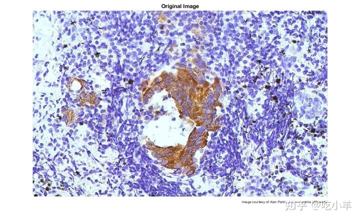
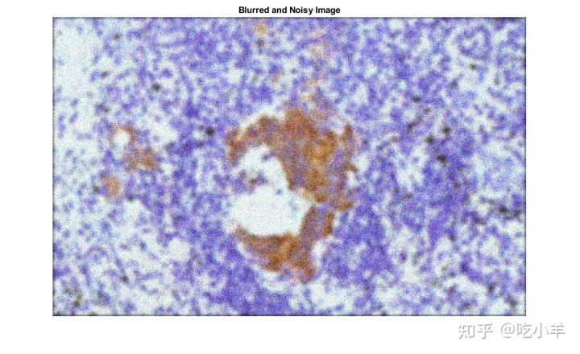
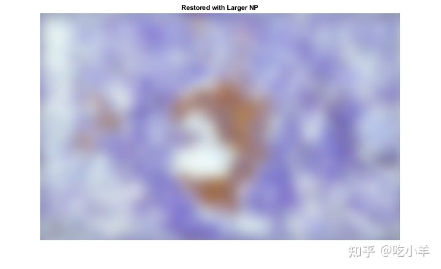
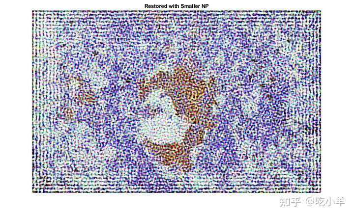
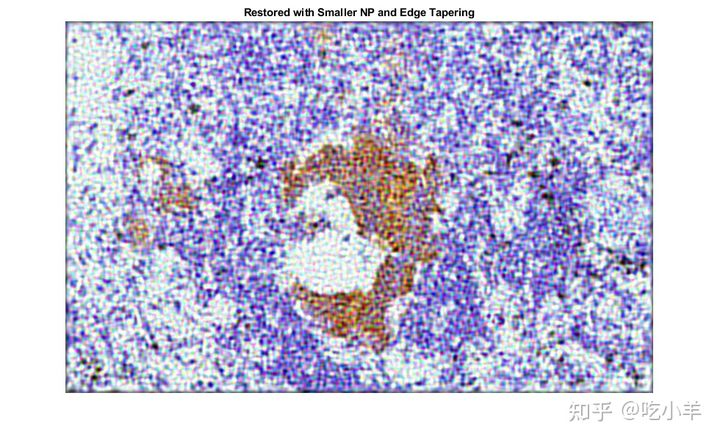
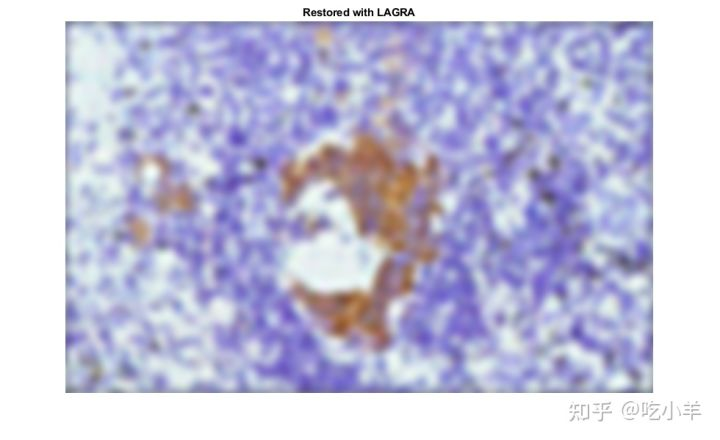
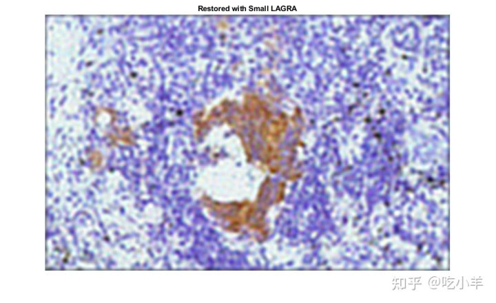
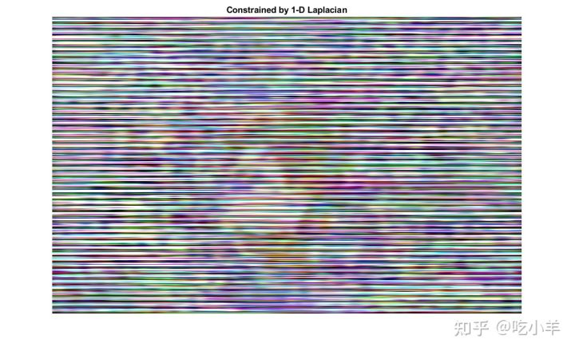

Home
本示例说明了如何使用正则化去卷积对图像进行去模糊处理。当已知关于加性噪声的有限信息并且对恢复的图像应用了约束（例如平滑度）时，可以有效地使用正则反卷积。通过使用正则化滤波器的约束最小二乘恢复算法可以恢复模糊且嘈杂的图像。
模拟高斯模糊和高斯噪声
读取并显示没有模糊或噪点的原始图像。
I = im2double(imread('tissue.png'));
imshow(I);
title('Original Image');
text(size(I,2),size(I,1)+15, ...
'Image courtesy of Alan Partin, Johns Hopkins University', ...
'FontSize',7,'HorizontalAlignment','right');

模拟可能因镜头失焦而导致的图像模糊。首先，使用fspecial函数并指定大小为11×11且标准偏差为5的高斯滤波器，来创建点扩展函数PSF。然后，使用imfilter，将PSF函数与图像进行卷积。
PSF = fspecial('gaussian',11,5);
blurred = imfilter(I,PSF,'conv');
通过使用imnoise函数，将零均值高斯噪声添加到模糊图像。
noise_mean = 0; noise_var = 0.02; blurred_noisy = imnoise(blurred,'gaussian',noise_mean,noise_var);
显示模糊的噪点图像。
imshow(blurred_noisy)
title('Blurred and Noisy Image')

使用估计的噪声能量还原图像
通过使用deconvreg函数恢复噪声图像，将噪声能量（NP）作为第三个输入参数。为了说明该算法对噪声能量值的敏感程度，此示例执行了三个还原。
对于第一次恢复，使用真实的NP。请注意，示例在此处输出两个参数。第一个返回值reg1是还原的图像。第二个返回值lagra是标量拉格朗日乘数，正则化反卷积已收敛在该标量拉格朗日乘数上。该值将在后面的示例中使用。
NP = noise_var*numel(I);
[reg1,lagra] = deconvreg(blurred_noisy,PSF,NP);
imshow(reg1)
title('Restored with True NP')
对于第二次还原，使用稍微高估的噪声功率。修复效果差。
reg2 = deconvreg(blurred_noisy,PSF,NP*1.3);
imshow(reg2)
title('Restored with Larger NP')

第三次还原，使用稍微低估的噪声功率。修复过程中产生了压倒性的噪声放大并从图像边界增强。
reg3 = deconvreg(blurred_noisy,PSF,NP/1.3);
imshow(reg3)
title('Restored with Smaller NP')

减少噪声放大和振铃效应
通过edgetaper在反卷积之前调用该函数，可以减少噪声放大和沿图像边界的振铃效应。图像恢复对噪声功率参数的敏感性降低。
Edged = edgetaper(blurred_noisy,PSF);
reg4 = deconvreg(Edged,PSF,NP/1.3);
imshow(reg4)
title('Restored with Smaller NP and Edge Tapering')

使用拉格朗日乘数
假定已经找到最佳解并且已知相应的拉格朗日乘数，则可以恢复模糊且嘈杂的图像。在这种情况下，传递给噪声功率NP的任何值都将被忽略。
为了说明该算法对拉格朗日乘数的敏感程度，此示例执行了三个还原。第一次还原使用先前执行reg1还原输出的lagra。
reg5 = deconvreg(Edged,PSF,[],lagra);
imshow(reg5)
title('Restored with LAGRA')

第二个还原使用100 * lagra，这增加了约束的显著性。默认情况下，这会导致图像过度平滑。
reg6 = deconvreg(Edged,PSF,[],lagra*100);
imshow(reg6)
title('Restored with Large LAGRA')
第三次还原使用lagra/ 100，这会弱化约束（为图像设置的平滑度要求）。它会放大噪音。对于拉格朗日乘数等于0的极端情况，重构是纯逆滤波。
reg7 = deconvreg(Edged,PSF,[],lagra/100);
imshow(reg7)
title('Restored with Small LAGRA')

使用不同的平滑度约束
对正则化运算符使用不同的约束来还原模糊和嘈杂的图像。不必在图像平滑度上使用默认的拉普拉斯约束，而是仅在一维（1-D Laplacian）中约束图像平滑度。
regop = [-1 2 -1];
reg8 = deconvreg(blurred_noisy,PSF,[],lagra,regop);
imshow(reg8)
title('Constrained by 1-D Laplacian')

======================================================================
我的测试结果及程序
下面是我测试的代码：

注：本文根据MATLAB官网内容修改而成。